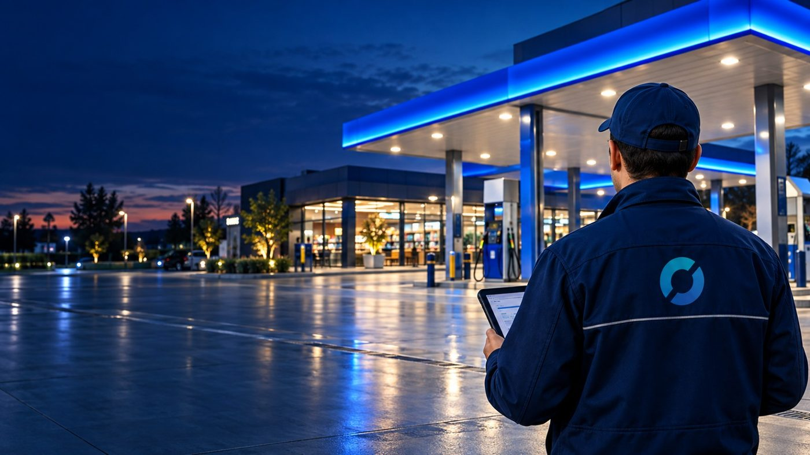

Standart her noktada aynı.
Yaygın fiziksel noktalara sahip markaların dış alan temizlik operasyonlarını Türkiye genelinde tek standartla yönetiyoruz. Her lokasyon için tanımlı kapsam, her ziyaret için fotoğraflı kanıt.
Lokasyon sayısı artınca standart dağılır.
Farklı ekipler, değişen uygulama yöntemleri ve dağınık raporlama marka görünümünde sapmalara yol açar. BİGEL CLEAN bu yapıyı tek model altında toplar.
- Ortak hizmet tanımı ve uygulama standardı
- Merkezi görev ve ziyaret planlaması
- Bölgesel ekiplerle hızlı saha erişimi
- Öncesi ve sonrası fotoğraflı hizmet kanıtı
- Lokasyon ve bölge bazında performans görünürlüğü

Kanopi ve saha temizliği · AkaryakıtHer alan için tanımlı yöntem, ekipman ve fotoğraf açısı.
Modüller tek seferlik ya da periyodik programa dahil edilebilir.
Kanopi Clean
Atmosferik kir, toz, egzoz izi, kurum ve biyolojik kirlerin periyodik temizliği.
Tabela ve Totem Clean
Marka görünürlüğünü etkileyen tabela, totem ve yönlendirme elemanlarının yüzeye uygun temizliği.
Zemin ve Otopark Clean
Beton, asfalt, parke, epoksi ve taş yüzeylerde kir, yağ lekesi ve çevre temizliği.
Cam ve Cephe Clean
Vitrin, giriş camı, cam cephe, kompozit, metal, taş ve boyalı yüzeyler.
Event Clean
Etkinlik öncesi hazırlık, etkinlik sırasında destek ve sonrası kapanış temizliği.
Night Clean
İşletmenin çalışma düzenini etkilemeden kapanış sonrası planlanan temizlik.
Emergency Clean
Ani kirlenme, dökülme, kötü hava, vandalizm veya denetim öncesi acil müdahale.
Seasonal Clean
Kış kiri, yosun, yaprak, çamur ve kaygan yüzey risklerine göre mevsimsel program.
Her ziyaret aynı dijital akışla yürütülür.
Görev kapsamı
Lokasyon bilgisi ve tanımlı hizmet.
Öncesi fotoğraf
Standart açılardan başlangıç kaydı.
Uygulama
Yöntem, ekipman ve kimyasal standardı.
Sonrası fotoğraf
Kontrol listesi ve kalite kriteri.
Tamamlanma
Bulgu bildirimi ve kapanış kaydı.
Performans, birlikte belirlenen KPI ve SLA ile izlenir.
Tek uygulamadan yıllık sözleşmeye.
Lokasyon bazlı hizmet
Belirli bir lokasyon ve ziyaret kapsamı için planlanan tek uygulama.
Periyodik paket
Aylık, iki aylık, üç aylık veya mevsimsel ziyaret programı. Modüller ihtiyaca göre birleştirilir.
Yıllık çok lokasyonlu sözleşme
Tüm lokasyonlar için yıllık takvim, hizmet kapsamı, SLA hedefleri ve merkezi raporlama.
Fiyatlandırma; lokasyon sayısı, alan ve yüzey türü, ziyaret sıklığı, ekipman ihtiyacı ve erişim koşullarına göre hazırlanır. Pilot uygulama nihai birim fiyatı netleştirir.
 Cephe ve giriş alanı · Perakende
Cephe ve giriş alanı · PerakendeMerkez adına, tüm ağda ortak standart.
Franchise yapılarında her şubenin farklı temizlik uygulaması marka görünümünde tutarsızlık yaratır. BİGEL CLEAN, merkez marka ile tek sözleşme ve tek hizmet tanımıyla çalışır.
- Tüm lokasyonlar için ortak kontrol listesi
- Standart fotoğraf açıları ve kalite kriterleri
- Lokasyon bazında skor ve uygunsuzluk takibi
- Merkez yönetim için karşılaştırmalı dashboard
Saha operasyonunuzu birlikte tasarlayalım.
Pilot kapsamını seçili lokasyonlarla başlatır, sonuçlara göre bölgesel ve Türkiye geneli operasyona ölçekleriz.